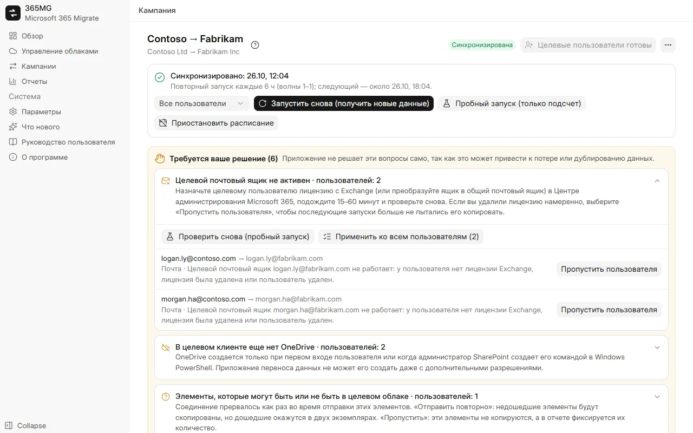

Много клиентов, много кампаний
Один вход глобального администратора на каждый клиент. 365MG проверяет разрешения и лицензии, а затем выполняет между клиентами любое число кампаний.
Миграция Microsoft 365 между клиентами
365MG копирует почту, контакты, календари, OneDrive и почтовые группы между клиентами с вашего собственного компьютера с Windows. Приложение ведет журнал каждого элемента, повторные запуски не создают дубликатов, а там, где выбор может привести к потере или дублированию данных, оно останавливается и спрашивает вас.

Один вход глобального администратора на каждый клиент. 365MG проверяет разрешения и лицензии, а затем выполняет между клиентами любое число кампаний.
Выберите исходных пользователей с помощью фильтров, автоматически сопоставьте их с целевыми, массово назначьте целевой домен и лицензию, создайте недостающих пользователей.
Экспортирует и импортирует каждый элемент через API почтовых ящиков Exchange, папка за папкой, с журналом по каждому элементу, поэтому остановленный запуск продолжается с места остановки.
Копирует файлы и папки, сохраняет даты создания и изменения, проверяет каждый файл по quickXorHash и загружает большие файлы частями по 64 МБ с возможностью возобновления.
Воссоздает списки рассылки и группы с поддержкой почты как группы Microsoft 365 с тем же псевдонимом, участниками и владельцами.
Разделите пользователей на волны, подсчитайте, что скопирует запуск, ничего не записывая, затем копируйте по-настоящему и синхронизируйте по расписанию до переключения.
Отсутствующие целевые почтовые ящики или OneDrive, заново созданные пользователи, элементы с неизвестным результатом: все это попадает в список «Требуется ваше решение» с действиями для их разрешения.
Исходные и скопированные объемы по каждому пользователю и в целом, пользователи, требующие внимания, группы и примечания; экспорт в автономную страницу HTML или CSV.
English, Tiếng Việt, 简体中文, 한국어, 日本語, Deutsch, Русский, हिन्दी и العربية (справа налево).
Каждая мера защиты появилась из того, что пошло не так при переносе компании на 350 пользователей: почтовые ящики, лишившиеся лицензии посреди процесса, еще не созданные OneDrive, соединения, обрывавшиеся во время отправки.

365MG распространяется автором. Напишите, чтобы получить установщик, демонстрацию или помощь с миграцией.